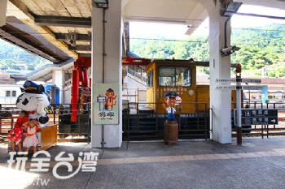
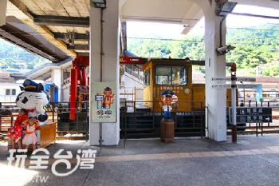

景點介紹
猴硐地區以兩處平溪線鐵路畫分為兩大景點，一為「猴硐坑礦產園區」，另一個就是「猴硐貓村」。由於貓村在早期便聚集許多貓咪在此棲息，加上貓咪繁殖力強，此處竟成了貓咪棲息地。於是在2009年10月31日透過愛貓人士們發起「有貓相隨，侯硐最美」的活動後，貓咪的居住環境煥然一新。
猴硐地區以兩處平溪線鐵路畫分為兩大景點，一為「猴硐坑礦產園區」，另一個就是「猴硐貓村」。由於貓村在早期便聚集許多貓咪在此棲息，加上貓咪繁殖力強，此處竟成了貓咪棲息地。於是在2009年10月31日透過愛貓人士們發起「有貓相隨，侯硐最美」的活動後，貓咪的居住環境煥然一新。
